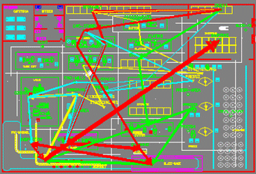
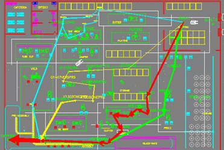
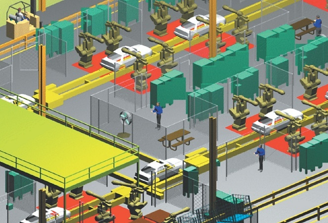

|
Malzeme elleçleme yoluyla maliyet düþürme çalýþmasý...
Ýþletme maliyetlerini düþürmek isteyen fabrika tasarruf için malzeme elleçleme alanýnda ne kadar potansiyel olduðunu merak ediyordu. Kurulan bilgisayar modelinde yapýlan analizler neticesinde malzeme elleçleme maliyetlerinin kabaca hesaplanan deðerden aslýnda %70 daha fazla olduðu ortaya çýktý. Tek baþýna bu sonuç bile bilgisayar destekli analizlerin önemini ortaya koymakta. Ardýndan maliyetleri düþürmek üzere yapýlan çalýþmalar neticesinde aþaðýdaki önlemlerin baþarýlý þekilde alýnabileceði belirlendi;
- Aþýrý yoðunluða sahip malzeme taþýma yollarýnýn kýsaltýlmasý için makinelerin arasýnda kýsa yol oluþturacak yeni koridorlar açýldý.
- Dýþarýdan alýnan kimi parçalarýn tedarikçileri tarafýndan farklý kasa tipi ve kasa içi adetleriyle gönderilmesi saðlandý.
- Merkezi depo tesis içi küçük depolar þeklinde daðýtýldý. Her ne kadar yeni mal kabul kapýlarý, personeli ve artan IT altyapý gereksinimi gibi yeni maliyetlere raðmen toplamda ulaþýlan tasarruf daha büyük oldu.
- Daha az sayýda forklift ve transpalet kullanmak mümkün oldu. Taþýmaya baðlý ürün hasarlarý ve iþ kazalarý azaltýldý.

Tesis içi malzeme akýþý (eski hali)

Tesis içi malzeme akýþý (yeni hali)
Not: Çizgilerin kalýnlýðý, o rotadaki malzeme trafiðinin yoðunluðu ile doðru orantýlýdýr.
Elbette ki tüm bu faydalarý ortaya çýkarabilmek için çok sayýda alternatif düþünüldü ve hepsi tek tek analiz edildi. Þirketlerde bu sayýda ve kapsamda analizlerin manüel olarak yapýlmasýný saðlayacak zaman, sabýr ve iþgücü genellikle yoktur. Bu çalýþma neticesinde ulaþýlan yýllýk 800 bin liralýk tasarruf tutarý ise bu tür teknik analizlerden kaçýnma yönündeki her türlü bahanenin karþýsýnda tam bir gövde gösterisi olmakta.
Fabrikanýn dijital ortamda görselleþtirilmesi
Dijital fabrika uygulamalarý sadece mühendislik çalýþmalarý ve analizler için deðil ayný zamanda görselleþtirme için de kullanýlmakta. Bugünkü ortamda iki boyutlu halde çizilen tesis planlarý, çok daha kolay ve hýzlý bir biçimde üç boyutlu olarak tasarlanabiliyor. Böyle bir görselliðin avantajý tesisle ilgili her türlü tartýþma ve toplantýnýn üç boyutlu veri üzerinde yapýlabilmesi, yorumlama hatalarýnýn ortadan kalkmasý ve konunun uzmaný olmayan karar vericilere de hitap etmesidir.

Böylece kurulum ve devreye alma sýrasýnda ortaya çýkacak hatalar daha en baþta tasarým safhasýnda teþhis edilebiliyor ve önlemleri alýnarak hatalý yatýrýmlar engelleniyor. Oluþturulan tesis modelinin baþka uygulamalara organik þekilde aktarýmý ve diðer mühendislik ekipleri tarafýndan tekrar kullanýmý sayesinde daha fazla sayýda tasarým iterasyonu daha kýsa zamanda tamamlanmakta.
Özellikle robotik ve otomasyon sistemlerinin bilgisayar ortamýnda simülasyonu, bilgisayar destekli ergonomi ve iþçi üretkenliði analizleri için üç boyutlu tesis verisi mutlaka gereklidir. Sonuç olarak fabrikalarý daha az sayýda son dakika deðiþikliðiyle üretime hazýr hale getirmenin önemli finansal getirileri olacaðý ortada.
|